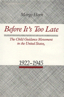

<body bgcolor="#FFFFFF" text="#000000" link="#0000FF" vlink="#CC0000" alink="#CC0000"><center><hr width="350" size="1" align="center" noshade>A history of the Commonwealth Fund, 1922-1945<hr width="350" size="1" align="center" noshade><p><a href="https://cdcshoppingcart.uchicago.edu/Cart/ChicagoBook.aspx?ISBN=9780877225898&&PRESS=temple" target="_top">Buy this book!</a> | <a href="https://cdcshoppingcart.uchicago.edu/Cart/Cart.aspx?PRESS=temple" target="_top">View Cart</a> | <a href="https://cdcshoppingcart.uchicago.edu/Cart/Cart.aspx?PRESS=temple" target="_top">Check Out</a></p><p></p></center><!--none//--><h1>Before It's Too Late</h1>
<H2>The Child Guidance Movement in the United States, 1922-1945</H2>
<h3>Margo Horn</h3>
<P>cloth 0-87722-589-3 $41.50, May 89, <FONT COLOR=#990033>Out of Stock Unavailable</FONT>
<BR> 260 pp
</P><BLOCKQUOTE><I>"Horn has carefully scoured the Commonwealth Fund archives...and has stitched together a complex story into an intelligible whole.... A perceptive, balanced account that will be a guide to scholars of philanthropy, mental hygiene, and child psychiatry and guidance for years to come."</I>
<br>&#151<b>Hamilton Cravens</b>, Iowa State University<I></I></BLOCKQUOTE>
<p>During the Progressive Era, the child guidance movement began as part of the Commonwealth Fund’s "Program for the Prevention of Juvenile Delinquency." During its years as a Commonwealth Fund project (1922-1945) the movement grew from a community effort for the prevention of mental illness to a field of specialty practice in psychiatry, psychology, and social work. Employing the newly accessible archives of the Commonwealth Fund, Margo Horn presents the complex history of the child guidance movement in relation to the mental health professions, philanthropic foundations, and the American family.
<p>Originally focused on the identification of the "problem child," the establishment of child guidance clinics, and programs to promote community mental health, the movement gradually shifted its goals toward the training of child guidance professionals and the monitoring of growth and treatment by the clinics. The idealistic concern over community mental health became a concern over professional standards and status with the fields of psychiatry, psychology, and social work vying for prominence. Within the context of this transition, Horn examines the ways in which the family and children increasingly came under the scrutiny of "experts."
<BR>&nbsp;<H2>About the Author(s)</H2>
<P><b>Margo Horn</b> directs the Innovative Academic Courses Program and teaches History at Stanford University.</P>
<BR><H2>Subject Categories</H2>
<p><A HREF="/tempress/american.html" TARGET="_top">American Studies</a>
</p>
<BR><h2 class="inpageheading">In the series</H2>
<P><I><a href="http://www.temple.edu/tempress/am_civ.html" onMouseOver="window.status='Click for other books in this series!'; return true;" onMouseOut="window.status=''; return true;" target="_top">American Civilization</a></i>, edited by Allen F. Davis.
</p><p>The focus of <i>American Civilization</i>, edited by Allen F. Davis, is American cultural history. In keeping with the interdisciplinary work in this field, which characteristically brings together art history, literary history and theory, and material culture, the titles in this series cover diverse aspects of American experience&#151from attitudes toward death to twentieth-century design innovations to images of country life in art and letters to trade unions' reliance on religious discourse. The series has been a pioneer in presenting work that uses photographs as historical documents and from its inception has been firmly committed to women's studies. As the first university press series in the field, <i>American Civilization</i> provided the inspiration and the standard for much of the interdisciplinary work developing in the contemporary academy.</p>
<p align="center"><a href="https://cdcshoppingcart.uchicago.edu/Cart/ChicagoBook.aspx?ISBN=9780877225898&&PRESS=temple" target="_top">Buy this book!</a> | <a href="https://cdcshoppingcart.uchicago.edu/Cart/Cart.aspx?PRESS=temple" target="_top">View Cart</a> | <a href="https://cdcshoppingcart.uchicago.edu/Cart/Cart.aspx?PRESS=temple" target="_top">Check Out</a></p><p><font face="Arial" size="1"><a href="copyright.html" onMouseOver="window.status='Web Copyright Policy';return true;" onMouseOut="window.status=''" title="Web Copyright Policy">&copy;</a> 2015 <a href="http://www.temple.edu" target="new" onMouseOver="window.status='Link to Temple University home page';return true;" onMouseOut="window.status=''" title="Link to Temple University home page">Temple University</a>. All Rights Reserved. http://www.temple.edu/tempress/titles/563_reg.html</font></p>